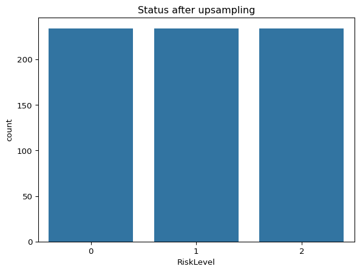

Maternal Watch AI Intelligent Early Warning System for Maternal Health Risk Detection in Nigeria
Author
PELUMI OGUNLUSI
Problem Statement
Nigeria faces a devastating maternal health crisis, accounting for 29% of all maternal deaths globally with approximately 75,000 maternal deaths annually - equivalent to one death every seven minutes. The maternal mortality rate stands at 993 deaths per 100,000 live births in 2023, far exceeding the Sustainable Development Goal target of fewer than 70 deaths per 100,000 by 2030.
The primary challenges contributing to this crisis include:
Inadequate healthcare infrastructure in rural communities, with women traveling an average of 3.3 km to reach healthcare facilities
Limited access to skilled healthcare providers during pregnancy and childbirth
Late detection of high-risk pregnancies due to insufficient monitoring and diagnostic tools
Poor digitization of maternal healthcare leading to delays in emergency interventions
Lack of real-time health monitoring for pregnant women, particularly in remote areas
Traditional healthcare systems struggle to provide timely interventions for conditions like postpartum hemorrhage (27% of deaths), sepsis (11%), hypertensive disorders (14%), and unsafe abortions (8%). The absence of predictive analytics and early warning systems results in preventable maternal deaths that could be avoided with timely medical intervention.
Problem Scope
Solution Overview
MaternalWatch AI is an integrated digital health platform that leverages artificial intelligence and machine learning to provide real-time maternal health risk assessment and early warning capabilities for pregnant women in Nigeria. The solution combines mobile health technology, predictive analytics, and telemedicine to create a comprehensive maternal health monitoring ecosystem.
Core Problem It Solves
The platform addresses the critical gap in early detection and prevention of maternal health complications by:
Predictive Risk Assessment: Utilizing machine learning algorithms to analyze maternal health data (blood pressure, heart rate, blood glucose, body temperature, age) to classify pregnancy risk levels as low, medium, or high-risk
Real-time Monitoring: Implementing mobile health applications that enable continuous tracking of vital signs and pregnancy symptoms, increasing preeclampsia knowledge by 179% as demonstrated in similar Nigerian implementations
Early Warning System: Deploying AI-powered alerts to healthcare providers when risk thresholds are exceeded, enabling timely interventions that can prevent maternal deaths
Telemedicine Integration: Connecting pregnant women in remote areas with skilled healthcare providers through digital platforms, removing geographical barriers to care
Target Users
Primary Users:
Pregnant women in urban and rural Nigeria, particularly those in underserved communities
Healthcare providers including midwives, nurses, and doctors in primary healthcare centers
Community health workers serving as intermediaries in remote areas
Secondary Users:
Healthcare administrators for data-driven decision making
Policy makers for maternal health program planning and resource allocation
Family members for pregnancy support and emergency response
Technical Implementation
The solution integrates:
Mobile applications for patient data collection and education (similar to the MyBelle pregnancy app successfully deployed in Nigeria)
AI/ML algorithms using Random Forest and Neural Network models achieving 95% accuracy in maternal health risk classification
Cloud-based analytics for real-time data processing and risk assessment
SMS and voice messaging for low-resource environments with limited internet connectivity
Integration with existing health systems including the National Health Management Information System (NHMIS)
Expected Impact
Based on evidence from similar digital health interventions in Nigeria, MaternalWatch AI can:
Reduce maternal mortality rates by 20% through early detection and intervention
Increase skilled birth attendance from current 52% to target levels above 70%
Improve antenatal care utilization through reminder systems and educational content
Enhance healthcare provider confidence in managing maternal health complications
Generate actionable health data for evidence-based policy making and resource allocation
This comprehensive approach aligns with Nigeria’s national health priorities and leverages the proven effectiveness of digital health solutions in improving maternal health outcomes across sub-Saharan Africa.
Dataset Understandingng
The dataset, named Maternal Health Risk Data Set.csv, is a comprehensive collection of maternal health data. Each row represents an individual report, and the columns represent various features associated with Marternal Health Risk. Data has been collected from different hospitals, community clinics, maternal health cares through the IoT based risk monitoring system. - Age: Age in years when a woman is pregnant. - SystolicBP: Upper value of Blood Pressure in mmHg, another significant attribute during pregnancy. - DiastolicBP: Lower value of Blood Pressure in mmHg, another significant attribute during pregnancy. - BloodGlucose: Blood glucose levels is in terms of a molar concentration, mmol/L. - BodyTemp: Body Temperature of Mothers at a point in time during pregnancy - HeartRate: A normal resting heart rate in beats per minute. - Risk Level: Predicted Risk Intensity Level during pregnancy considering the previous attribute.
import pandas as pdimport numpy as npimport seaborn as snsimport matplotlib.pyplot as pltimport plotly.express as pximport itablesimport sklearn
Reading the dataset
maternal = pd.read_csv("data/Maternal Health Risk Data Set.csv")
Visual inspection of the dataset
Here, we inspect the initial rows, columns, data types, null values, duplicated status, and summary statistics to get an understanding of the dataset’s structure
itables.show(maternal)
Loading ITables v2.4.2 from the internet...
(need help?)
# Pie chart of fraud reported cases proportionfig_pie = px.pie( maternal, names='RiskLevel', title='Pie Chart of Maternal Risk Level Cases', hole=0.3)fig_pie.show()
Observations gotten from Initial Visual Data Exploration
The dataset consists of 1014 rows and 7 columns
No missing values in the entire dataset
The first 6 columns are numeric with only the ‘RiskLevel’ column being a categorical column
RiskLevel is our target variable and the rest of the features will be our predictor variables
About 55% (562 rows out of a possible 1014 rows) of the entire dataset is duplicated
The proportion of labels in this RiskLevel column is imbalanced implying the need to balance the dataset as we proceed.
Range of age is from 10 till 70 years old. Even though it’s uncommon, it is possible for some girls to be pregnant at 10 y.o., as well as for some women to be pregnant at 70 y.o. For example, here is the data on birth rate for US girls aged 10-14 years.
It is imprtant to note that all numerical columns in the dataset should have a minimum value greater than 0
When visually exploring the dataset, it was observed that there was an error with heart rate column showing 2 obsevations with the value 7, which doesn’t make sense. We will have to fix it. P.S. It looks like there are 2 observations, but it is actually one duplicated.
The BodyTemp column is recorded in Fahrenheit and this will be converted to celsius later
Values in the RiskLevel column are ordinal, in other words, they appear as ordered categories. For this, we can perform a label encoding, where values are manually assigned to the corresponding keys, using the replace() function.
C:\Users\pelumi Ogunlusi\AppData\Local\Temp\ipykernel_4820\2425967463.py:1: FutureWarning:
Downcasting behavior in `replace` is deprecated and will be removed in a future version. To retain the old behavior, explicitly call `result.infer_objects(copy=False)`. To opt-in to the future behavior, set `pd.set_option('future.no_silent_downcasting', True)`
Age
SystolicBP
DiastolicBP
BloodGlucose
BodyTemp
HeartRate
RiskLevel
0
25
130
80
15.0
36.67
86
2
1
35
140
90
13.0
36.67
70
2
2
29
90
70
8.0
37.78
80
2
3
30
140
85
7.0
36.67
70
2
4
35
120
60
6.1
36.67
76
0
...
...
...
...
...
...
...
...
673
12
100
50
6.4
36.67
70
1
674
15
100
60
6.0
36.67
80
0
703
15
100
49
7.6
36.67
77
0
704
12
100
50
6.0
36.67
70
1
705
21
100
50
6.8
36.67
60
0
452 rows × 7 columns
Exploring outliers
plt.figure(figsize=(20, 15))plotnumber =1for col in maternal.columns:if plotnumber <=24: ax = plt.subplot(5, 5, plotnumber) sns.boxplot(maternal[col]) plt.xlabel(col, fontsize=15) plotnumber +=1plt.tight_layout()plt.show()
As we can see from these plots, there are some points that are plotted outside the box plot area and that greatly deviate from the rest of the population. Whether to remove or keep them greatly depends on the understanding of our data and the type of analysis to be performed. In this case, the points that are outside of our box plots might be the actual true data points and do not need to be removed.
fig, axes = plt.subplots(nrows=2, ncols=3, figsize=(18, 10))# Agesns.histplot(ax=axes[0, 0], x=maternal.Age, kde=True, color="#4e79a7")axes[0, 0].set_title("Distribution of Age")# BloodGlucosesns.histplot(ax=axes[0, 1], x=maternal.BloodGlucose, kde=True, color="#f28e2b")axes[0, 1].set_title("Distribution of Blood Glucose (mmol/L)")# BodyTempsns.histplot(ax=axes[0, 2], x=maternal.BodyTemp, kde=True, color="#e15759")axes[0, 2].set_title("Distribution of Body Temperature (°C)")# HeartRatesns.histplot(ax=axes[1, 0], x=maternal.HeartRate, kde=True, color="#76b7b2")axes[1, 0].set_title("Distribution of Heart Rate (bpm)")# RiskLevelsns.countplot(ax=axes[1, 1], x=maternal.RiskLevel, palette="pastel")axes[1, 1].set_title("Distribution of Risk Level")axes[1, 1].set_xticklabels(['Low', 'Mid', 'High'])# Remove empty subplotaxes[1, 2].axis('off')plt.tight_layout()plt.show()
C:\Users\pelumi Ogunlusi\AppData\Local\Temp\ipykernel_4820\4071436331.py:20: FutureWarning:
Passing `palette` without assigning `hue` is deprecated and will be removed in v0.14.0. Assign the `x` variable to `hue` and set `legend=False` for the same effect.
C:\Users\pelumi Ogunlusi\AppData\Local\Temp\ipykernel_4820\4071436331.py:22: UserWarning:
set_ticklabels() should only be used with a fixed number of ticks, i.e. after set_ticks() or using a FixedLocator.
Bivariate Analysis
# Correlation heatmap for all numerical featuresplt.figure(figsize=(10, 7))sns.heatmap(maternal.corr(), annot=True, cmap='coolwarm', fmt=".2f")plt.title("Correlation Heatmap of Maternal Health Features")plt.show()
# Pairplot colored by RiskLevelsns.pairplot(maternal, hue="RiskLevel", palette="Set2", diag_kind="kde")plt.suptitle("Pairplot of Features Colored by Risk Level", y=1.02)plt.show()
# Boxplots of features by RiskLevelfeatures = ['Age', 'SystolicBP', 'DiastolicBP', 'BloodGlucose', 'BodyTemp', 'HeartRate']plt.figure(figsize=(18, 12))for i, col inenumerate(features): plt.subplot(2, 3, i+1) sns.boxplot(x='RiskLevel', y=col, data=maternal, palette="pastel") plt.xlabel("Risk Level") plt.ylabel(col) plt.title(f"{col} by Risk Level") plt.xticks([0, 1, 2], ['Low', 'Mid', 'High'])plt.tight_layout()plt.show()
C:\Users\pelumi Ogunlusi\AppData\Local\Temp\ipykernel_4820\729542755.py:6: FutureWarning:
Passing `palette` without assigning `hue` is deprecated and will be removed in v0.14.0. Assign the `x` variable to `hue` and set `legend=False` for the same effect.
C:\Users\pelumi Ogunlusi\AppData\Local\Temp\ipykernel_4820\729542755.py:6: FutureWarning:
Passing `palette` without assigning `hue` is deprecated and will be removed in v0.14.0. Assign the `x` variable to `hue` and set `legend=False` for the same effect.
C:\Users\pelumi Ogunlusi\AppData\Local\Temp\ipykernel_4820\729542755.py:6: FutureWarning:
Passing `palette` without assigning `hue` is deprecated and will be removed in v0.14.0. Assign the `x` variable to `hue` and set `legend=False` for the same effect.
C:\Users\pelumi Ogunlusi\AppData\Local\Temp\ipykernel_4820\729542755.py:6: FutureWarning:
Passing `palette` without assigning `hue` is deprecated and will be removed in v0.14.0. Assign the `x` variable to `hue` and set `legend=False` for the same effect.
C:\Users\pelumi Ogunlusi\AppData\Local\Temp\ipykernel_4820\729542755.py:6: FutureWarning:
Passing `palette` without assigning `hue` is deprecated and will be removed in v0.14.0. Assign the `x` variable to `hue` and set `legend=False` for the same effect.
C:\Users\pelumi Ogunlusi\AppData\Local\Temp\ipykernel_4820\729542755.py:6: FutureWarning:
Passing `palette` without assigning `hue` is deprecated and will be removed in v0.14.0. Assign the `x` variable to `hue` and set `legend=False` for the same effect.
# Scatter plots for key relationshipsplt.figure(figsize=(16, 6))plt.subplot(1, 2, 1)sns.scatterplot(x='SystolicBP', y='DiastolicBP', hue='RiskLevel', data=maternal, palette="Set1")plt.title("Systolic vs Diastolic BP by Risk Level")plt.xlabel("Systolic BP (mmHg)")plt.ylabel("Diastolic BP (mmHg)")plt.subplot(1, 2, 2)sns.scatterplot(x='BloodGlucose', y='BodyTemp', hue='RiskLevel', data=maternal, palette="Set1")plt.title("Blood Glucose vs Body Temp by Risk Level")plt.xlabel("Blood Glucose (mmol/L)")plt.ylabel("Body Temp (°C)")plt.tight_layout()plt.show()
Key Observations from the Visualizations
The low risk pregnancies are the most frequent overall, they happen in more than half of the cases.
Younger women tend to have low and mid risk pregnancies, while the pregnancies of women above 35 y.o. more often are classified as high risk, thus, need more attention.
If a pregnant woman has a blood sugar higher than 8 mmol/L, in most of the cases, the pregnancy is considered high risk.
Distribution of lower value of blood pressure is more spread, around 60-100 mmHg, compared to distribution of upper value, which is centered around 120 mmHg.
Higher blood pressure (both systolic and diastolic), higher body temperature are associated with higher risk pregnancies.
As for correlation between age and blood pressure, very low blood pressure (both systolic and diastolic) was observed in some of the girls and young women, but normal and high blood pressure don’t seem to be much correlated with age, at least in our dataset.
Heart rate of pregnant women is normally distributed and it’s only slightly associated with risk level.
Feature Engineering
Separating the feature and target column
x = maternal.drop('RiskLevel', axis =1) y = maternal['RiskLevel']
Feature Scaling
Won’t be done yet
Balancing the dataset using oversampling RandomOverSampler
# Balancing the dataset using RandomOverSampler from imblearn from imblearn.over_sampling import RandomOverSamplerros = RandomOverSampler(random_state=42)x_sm, y_sm = ros.fit_resample(x, y)oversample_plot = y_sm.value_counts().reset_index()
# Plot showing distribution of newly balanced datasns.barplot(x="RiskLevel", y="count", data=oversample_plot)plt.title("Status after upsampling")
Text(0.5, 1.0, 'Status after upsampling')

Modeling, Model Evaluation and Hyperparameter tuning:
# Spliting the dataset into training and test sets to ensure the model's generalizability.x_train,x_test,y_train,y_test = train_test_split(x_sm,y_sm,test_size =0.2,random_state=4)
In a Jupyter environment, please rerun this cell to show the HTML representation or trust the notebook. On GitHub, the HTML representation is unable to render, please try loading this page with nbviewer.org.
# Fitting the best estimatordtc = grid_search.best_estimator_ y_pred = dtc.predict(x_test)
# Model Evaluationfrom sklearn.metrics import accuracy_score, confusion_matrix, classification_reportdtc_train_acc = accuracy_score(y_train, dtc.predict(x_train))dtc_test_acc = accuracy_score(y_test, y_pred)print (f"Training accuracy of Decision Tree is: {dtc_train_acc}")print (f"Test accuracy of Decision Tree is: {dtc_test_acc}")print(confusion_matrix(y_test, y_pred))print(classification_report(y_test, y_pred))
Training accuracy of Decision Tree is: 0.8680926916221033
Test accuracy of Decision Tree is: 0.6950354609929078
[[29 10 7]
[11 32 4]
[ 2 9 37]]
precision recall f1-score support
0 0.69 0.63 0.66 46
1 0.63 0.68 0.65 47
2 0.77 0.77 0.77 48
accuracy 0.70 141
macro avg 0.70 0.69 0.69 141
weighted avg 0.70 0.70 0.70 141
# Model Evaluationfrom sklearn.metrics import accuracy_score, confusion_matrix, classification_reportrand_clf_train_acc = accuracy_score(y_train, rand_clf.predict(x_train))rand_clf_test_acc = accuracy_score(y_test, y_pred)print (f"Training accuracy of Random Forest is: {rand_clf_train_acc}")print (f"Test accuracy of Random Forest is: {rand_clf_test_acc}")print(confusion_matrix(y_test, y_pred))print(classification_report(y_test, y_pred))
Training accuracy of Random Forest is: 0.9233511586452763
Test accuracy of Random Forest is: 0.7446808510638298
[[32 10 4]
[11 33 3]
[ 1 7 40]]
precision recall f1-score support
0 0.73 0.70 0.71 46
1 0.66 0.70 0.68 47
2 0.85 0.83 0.84 48
accuracy 0.74 141
macro avg 0.75 0.74 0.74 141
weighted avg 0.75 0.74 0.75 141
# Model Evaluationgbc_train_acc = accuracy_score(y_train, gbc.predict(x_train))gbc_test_acc = accuracy_score(y_test, y_pred)print(f"Training accuracy of Gradient Boosting is: {gbc_train_acc}")print(f"Test accuracy of Gradient Boosting is: {gbc_test_acc}")print(confusion_matrix(y_test, y_pred))print(classification_report(y_test, y_pred))
Training accuracy of Gradient Boosting is: 0.9019607843137255
Test accuracy of Gradient Boosting is: 0.723404255319149
[[30 12 4]
[12 31 4]
[ 1 6 41]]
precision recall f1-score support
0 0.70 0.65 0.67 46
1 0.63 0.66 0.65 47
2 0.84 0.85 0.85 48
accuracy 0.72 141
macro avg 0.72 0.72 0.72 141
weighted avg 0.72 0.72 0.72 141
# Model Evaluationetc_train_acc = accuracy_score(y_train, etc.predict(x_train))etc_test_acc = accuracy_score(y_test, y_pred)print(f"Training accuracy of Extra Trees is: {etc_train_acc}")print(f"Test accuracy of Extra Trees is: {etc_test_acc}")print(confusion_matrix(y_test, y_pred))print(classification_report(y_test, y_pred))
Training accuracy of Extra Trees is: 0.9518716577540107
Test accuracy of Extra Trees is: 0.7588652482269503
[[31 11 4]
[ 9 35 3]
[ 2 5 41]]
precision recall f1-score support
0 0.74 0.67 0.70 46
1 0.69 0.74 0.71 47
2 0.85 0.85 0.85 48
accuracy 0.76 141
macro avg 0.76 0.76 0.76 141
weighted avg 0.76 0.76 0.76 141
Model Performance Comparison
# Creating a dataframe showing the best performing modelsmodels = pd.DataFrame({'Model' : ['SVC','KNN','Decision Tree','Random Forest','Gradient Boost','Extra Trees'],'Score' : [svc_test_acc, knn_test_acc, dtc_test_acc, rand_clf_test_acc, gbc_test_acc, etc_test_acc]})models = models.sort_values(by ='Score', ascending =False)models
Model
Score
5
Extra Trees
0.758865
3
Random Forest
0.744681
4
Gradient Boost
0.723404
2
Decision Tree
0.695035
1
KNN
0.524823
0
SVC
0.503546
Model Performance Comparison Visualization
# Bar chart showing plot of models based on performancepx.bar(data_frame=models, x='Score', y='Model', color='Score', template='plotly_dark', title='Models comparison')
Model Interpretation:
Model Interpretation with SHAP
# SHAP interpretation for Extra tree Classifier modelimport shap
# Create an explainer object for the Extra tree Classifier modelexplainer = shap.TreeExplainer(etc)
# Calculate SHAP values for the test setshap_values = explainer.shap_values(x_test)
# Summary plot for feature importanceshap.summary_plot(shap_values, x_test, plot_type="bar", show=True)
Deployment & Prediction
# Save the trained Extra trees modelimport joblibjoblib.dump(etc, 'extra_trees_model.pkl')